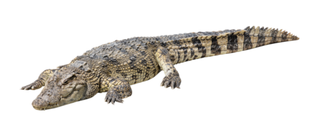

Cocodrilo
Cocodrilo (Crocodylidae)

Hábitat: principalmente en rios, agua dulce, y zonas costeras y manglares.
Estilo de vida:son carnívoros.
Características:
- tiene comportamiento solitario y suele ser territorial.
- tienen una piel escamosa y dura y mandíbula poderosa y afilada.
- tienen una cola larga y musculosa para poder nadar.
- tienen sus ojos y fosas nasales ubicados en la parte superior de la cabeza para facilitar el nado.
- Presentan un cuerpo macizo cola comprimida y tamaño grande.
Volver a la pagina principal
pagina principal